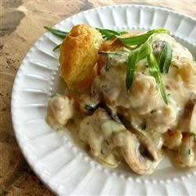

Cheesy Tarragon Bay Scallops

Description
Nice presentation, and when served over a puff pastry shell, elegant enough for a special dinner. The Parmesan and tarragon give you a rich and flavorful cheese sauce that's the perfect complement to the scallops.
Ingredients
- 4 puff pastry shells
- 2 tablespoons butter, divided
- 12 ounces bay scallops
- 3/4 cup sliced button mushrooms
- 2 tablespoons minced shallot
- 1 cup half-and-half
- 2 tablespoons flour
- 1/4 cup dry white wine
- 2 tablespoons sherry
- 1 teaspoon lemon juice
- 1 teaspoon Dijon mustard
- 1/2 cup shredded Parmesan cheese
- 1 tablespoon chopped fresh tarragon, plus more for garnish
- freshly ground black pepper to taste
Steps
- Preheat the oven to 425 degrees F (220 degrees C).
- Remove all wrapping from the pastry shells and set on an ungreased baking sheet. Bake in the preheated oven until golden brown and puffed, about 20 minutes (follow directions on package).
- Melt 1 tablespoon butter in a large skillet over medium-high heat. Add bay scallops, and saute quickly on both sides until lightly browned, about 2 minutes per side. Do not overcook. Remove scallops from skillet and set aside.
- Reduce heat to medium, and melt remaining tablespoon butter. Add mushrooms and shallots, and sautè until just tender, 3 to 5 minutes.
- Whisk half-and-half and flour into the skillet, whisking until thickened; add white wine, sherry, lemon juice, and Dijon mustard, and whisk into the cream sauce.
- Stir in Parmesan cheese, 1 tablespoon tarragon, and pepper. Return scallops to the cheese sauce, stir, and reheat briefly.
- Remove top of the puff pastry shell, and fill with cheesy scallops, overflowing slightly to serve. Garnish with additional fresh tarragon if you like.